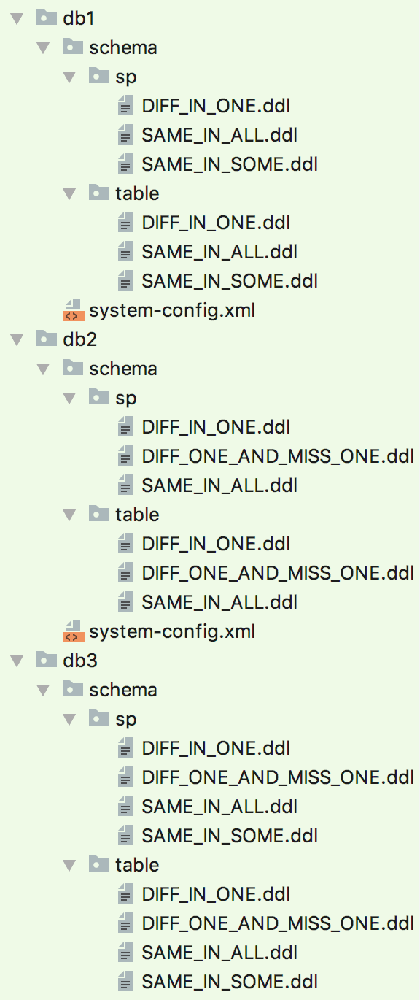
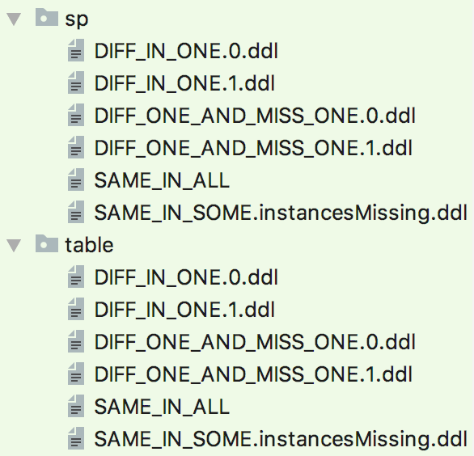

We have created a tool to help teams merge database schemas. i.e.
You should consider this step if you have the following use case:
High-level approach to resolve this:
NOTE - all the steps below can work to merge any number of instances (i.e. an n-way merge, not just a 2-way merge)
Here the steps on how to do each part of the merge:
Specific steps on how to do the merge:
%OBEVO_HOME%\bin\deploy.bat DBREVENGMERGE -outputDir h:\merged-output -dbMergeConfigFile h:\myDbMergeConfig.txt
h:\myDbMergeConfig.txt contents:
# First, list out all the instances instances=instance1,instance2,instance3 # Then for each instance, define the inputDir where your reverse-engineered files from the previous step are instance1.inputDir=h:\instance1dboutput instance2.inputDir=h:\instance2dboutput instance3.inputDir=h:\instance3dboutput
To walk through an example: let's say that for our example app, we have 3 instances: cd, eq, fx. The resulting directories are as follows:
Let's assume all these folders are in H:\mydboutput
The command to run the reverse engineering would be as follows:
%OBEVO_HOME%\bin\deploy.bat DBREVENGMERGE -outputDir h:\merged-output -inputDirEntries h:\mergeConfig.txt
h:\mergeConfig.txt contents:
instances=cd,eq,fx cd.inputDir=h:\mydboutput\cd eq.inputDir=h:\mydboutput\eq fx.inputDir=h:\mydboutput\fx
After running that command, the output is as follows. We expand only the "view" folder for this doc.
These fall into 3 flavors:
From here, the assumption is that when you define your environment names (in the next step when you create system-config.xml), you should name the environment for that instance with that instance prefix. e.g. cd-dev, cd-uat1, cd-prod1, eq-dev, eq-qa, eq-prod, ... Fyi, this is done via the package-info.txt file stored in each folder (the merge step will generate this for you); will add more on this file in the "Advanced Use Cases" section below

PLEASE NOTE: This feature is an Alpha-quality version (i.e. early Incubation, not tried out by other teams). No work imminently planned on this, but we can look more into this if there is demand. Any brave souls who would like to try this out, please reach out to the Obevo team first to coordinate.
Given the merge view, you can look to consolidate where possible if you are ambitious. The steps are different based on the objects that are different.%OBEVO_HOME%\bin\deploy.bat DBREVENGTABLEMERGE -outputDir h:\merged-output -dbMergeConfigFile h:\myDbMergeConfig.txt
h:myDbMergeConfig.txt contents (this has more stuff too, now includes the db information):
instances=instance1,instance2,instance3 # Then for each instance, define the inputDir where your reverse-engineered files from the previous step are instance1.inputDir=h:\instance1dboutput instance1.driverClassName=com.sybase.jdbc3.jdbc.SybDriver instance1.url=jdbc:sybase:Tds:myserver1.me.com:1234 instance1.username=myuser1 instance1.password=mypass1 instance1.physicalSchema=INST1 instance2.inputDir=h:\instance2dboutput instance2.driverClassName=com.sybase.jdbc3.jdbc.SybDriver instance2.url=jdbc:sybase:Tds:myserver2.me.com:1234 instance2.username=myuser2 instance2.password=mypass2 instance2.physicalSchema=INST2 instance3.inputDir=h:\instance3dboutput instance3.driverClassName=com.sybase.jdbc3.jdbc.SybDriver instance3.url=jdbc:sybase:Tds:myserver3.me.com:1234 instance3.username=myuser3 instance3.password=mypass3 instance3.physicalSchema=INST3
Essentially, you add the db connection params, including the schema, basically to where you deployed to.
The tool will do a diff among the tables and seeks to create a merged view of each table, i.e.
There are certain differences that are not resolvable automatically. The tool flags these for you, e.g.
The tool will just generate the SQLs and put them into a file format; it will not actually execute them. Hence, you are free to modify the SQLs as you choose. Worst-case, you can just use this for your analysis.
To execute it, do it manually. Yes, this is not automated and unlike Obevo! This is because this feature is still early (call it an "alpha version" and cleanup is tricky; we can add support for this in Obevo eventually to execute these cleanups, but for now, let's do this manually so that teams don't actually execute alters that they don't want to.
Assuming you choose to proceed w/ the cleanups: execute them in UAT and re-compare the schemas (e.g. using Aqua Data Studio). If you are happy, go ahead and execute them in prod. Then, reverse-engineer again to ensure you have the latest view of the ddls in your code, and thus you can go w/ 1 set of ddls for your environment
(now obviously, it may not be possible to clean up all objects; feel free to use the package-info.txt files and the //// METADATA includeEnvs=... or excludeEnvs=... as needed to segregate the files per environment)